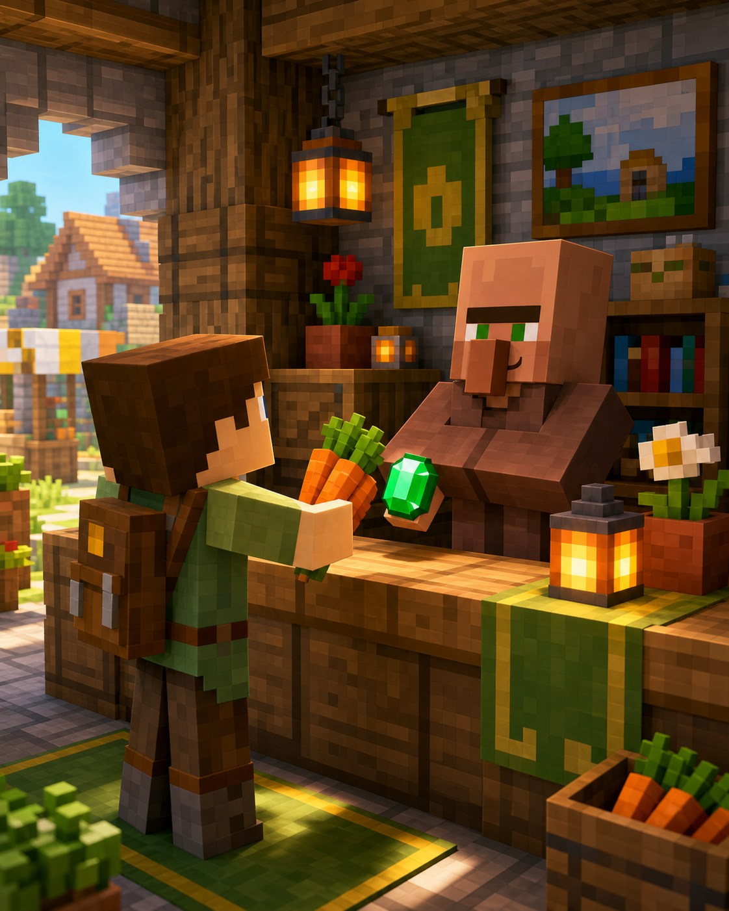
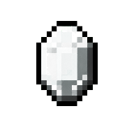

Корисне відкриття
Жителі знають секрети
Смарагди —
це ключ
до речей.
Обміни перетворюють звичайні врожаї та ресурси на корисні предмети, досвід і нові пропозиції.

Навіщо це потрібно?
Торгівля дає речі, які важко або довго добувати самому. За обміни житель отримує досвід і поступово відкриває нові товари.
Три прості дії
Як торгувати
1Відкрий меню жителяВикористай дію на дорослому торговцеві+
Ліворуч показано, що житель бере, а праворуч — що віддає. Наведи курсор на рядок, щоб перевірити ціну.
2Почни з простого ресурсуЇжа, папір, вугілля або інші речі+
Віддай потрібні предмети та забери смарагд або товар. Зручніше починати з того, чого у тебе багато.
3Підвищуй рівень жителяНові обміни з’являються поступово+
Зелена смужка в меню показує прогрес. Виконуй доступні обміни, і торговець відкриє наступний рівень.
Обмін: як це виглядає

Твоїресурси
корисна річ
● Деякі пропозиції тимчасово закриваються, але пізніше відновлюються.
Підказка мандрівникові
Важливо знати
Торгують лише дорослі
Малюки не відкривають меню обмінів.
Ціни бувають різними
Порівнюй, скільки ресурсів просить кожен житель.
Не витрачай усе відразу
Залиши трохи їжі та матеріалів для себе.
Маленьке завдання
Спробуй за 5 хвилин
- Знайди жителя з професією.
- Зроби один простий обмін.
- Подивись, як змінилась його смужка досвіду.
★ Бонус: назбирай перший смарагд і не витрачай його до наступної картки.